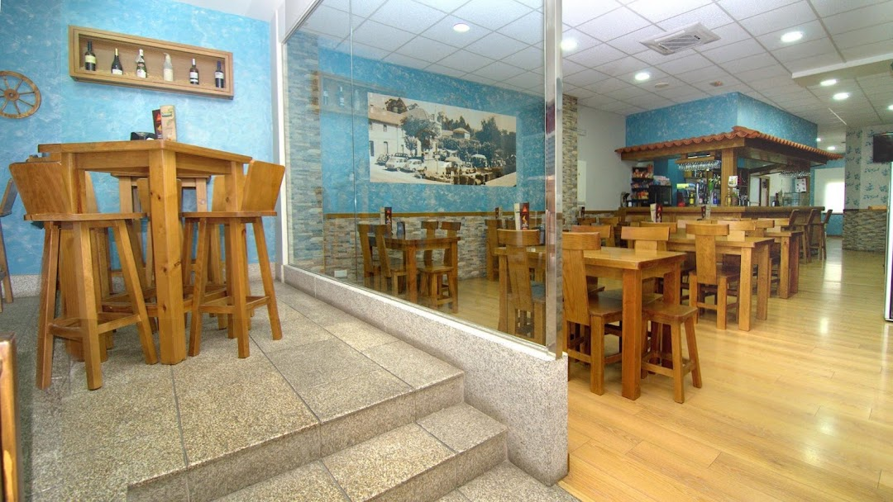

En la parroquia de Parderrubias, concello de Salceda de Caselas, se ha habilitado un mirador sobre el alto del llamado Coto das Pías, a 168,2 metros de altura sobre el nivel del mar. Para ello, el 14 de febrero de 2021, se ha instalado en lo más alto de la pequeña montaña un banco y una barandilla metálica sobre un peñasco orientado al este, hacia la salida de sol
Los petos de ánimas son pequeños santuarios ubicados en caminos, encrucijadas e iglesias1 en la comunidad autónoma de Galicia, los cuales constituyen manifestaciones materiales del culto a los muertos y de la devoción a las ánimas.
La clave de A´Esfarrapada está en sus cocinas mediterránea y española. Sus generosas tapas, perfectamente elaboradas croquetas y tierno laing te van a saber increíblemente bien. Muchos usuarios apuntan que puedes comer aquí con confianza un casero pastel de frutas.
Tapería y vinoteca. Tapas variadas, calientes y frías, raciones, platos combinados, bocadillos, postres, tortillas, ensaladas, conservas, tablas de embutidos, tablas de quesos, pulpo, jamón asado, zorza, calamares, oreja, revueltos, patatas fritas, gambas al ajillo, chistorra, gulas con gambas... Amplia carta de vinos.
Vota por la candidatura Olímpica de Salceda de Caselas